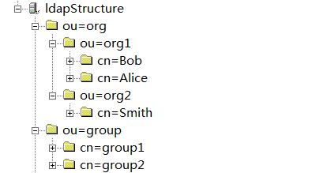

LDAP
UAV的权限控制通过对接LDAP实现，推荐使用OPENLDAP，安装详见http://www.openldap.org/
UAV权限与LDAP权限对应关系
LDAP中常见人员结构如下图  通常人员只属于组织架构中的一个特定组织(org)。同时一个人员可能属于多个业务团队(group)。
登录权限
UAV apphub的登录权限通过LDAP的域账户进行登录，域账户名对应人员的一个唯一属性，属性名可配置。
APP访问权限
UAV apphub中的APP访问权限是通过组织(org)进行授权的，一个组织下(org)的人员可以访问指定的若干个APP。在apphub下授权的组名命名方式如：org/org1。
应用组数据权限
UAV apphub中的应用组数据访问权限（如应用监控、应用容器监控的应用组查看权限）是通过业务团队(group)来授权的，属于一个业务团队(group)的 人员可以有指定的若干个应用组的权限。apphub下授权的业务团队命名方式如：group1。
人员与业务组的关系由人员的memberOf字段确定，如节点Bob包含memberOf属性cn=group1,ou=group,dc=my-domain,dc=com表明Bob属于group1业务组，人员节点可有多个memberOf字段。同时业务组也需要member字段说明业务包括哪些人，如节点group1包含member属性cn=Bob,ou=org1,ou=org,dc=my-domain,dc=com表明group1业务组有Bob这个人员。
若LDAP中无业务组结构，可在人员中添加自定义业务团队属性(属性名可配置)，表明人员的业务团队，如在Smith节点添加group属性MyGroup，然后在apphub下授权MyGroup也能进行权限控制。
LDAP相关配置
UAV中关于LDAP的配置在apphub配置中，字段为uav.apphub.sso.ldap.connection.info，值为一个json字符串，如下
{"url":"ldap://127.0.0.1:389/","loginbasedn":"DC=my-domain,DC=com","querybasedn":"DC=my-domain,DC=com","user":"yx-gitlab01","password":"G3tT8238","suffix":"@creditease.cn","primaryKey":"userPrincipalName","groupTag":"memberOf","rootOU":"my-domain","groupQueryField":"mail","userQueryField":"mail"}
字段含义依次为ldap地址、登录basedn（组织架构最高级的上层DN）、查询basedn（包含组织架构和业务团队节点的DN）、LDAP管理员用户名、密码、域账户统一后缀（若无则为空字符串）、登录域账户对应人员的属性名、自定义业务团队属性（默认为memberOf）、组织架构最高级的上层节点名、业务团队查询属性（供查询信息使用）、人员查询属性（供查询信息使用）
UAV权限控制扩展
UAV提供的自定义扩展权限控制的接口，可以使用LDAP以外的方式进行权限控制，实现方法为在apphub的工程com.creditease.uav.console的com.creditease.uav.apphub.sso包下添加Abstract类GUISSOClient的实现类，实现abstract权限验证方法，然后在apphub配置中修改字段uav.apphub.sso.implclass为自定义实现类的全类名。